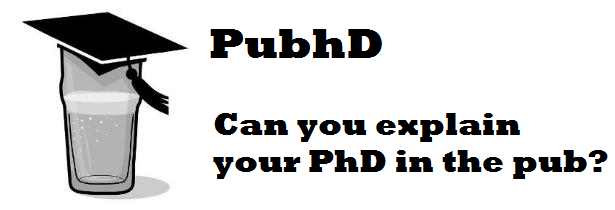

Can you explain your PhD in the pub?
PubhD is a monthly event that started up in Nottingham on January 22, 2014.
At each event, three PhD students (or EngD, EdD and post-doc), from any academic discipline, explain their work to an audience in a pub in exchange for a pint or two.
The talks are at a “pub level” – the idea is that you don’t have to be an academic to understand the talks.
The idea is spreading. Find a PubhD event near you, or start one!